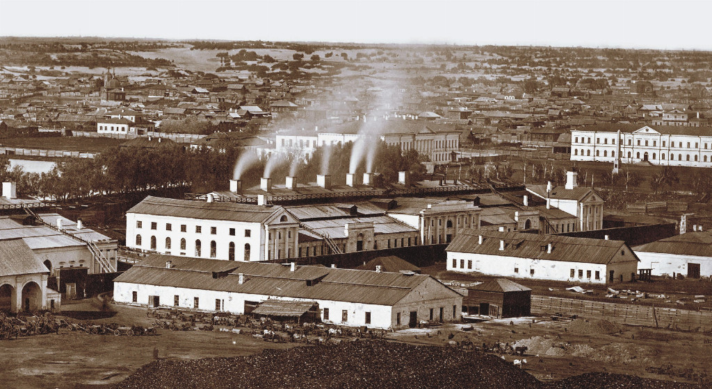
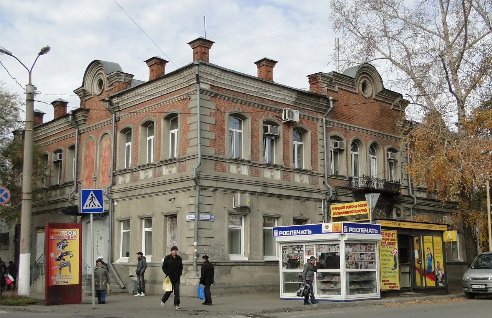
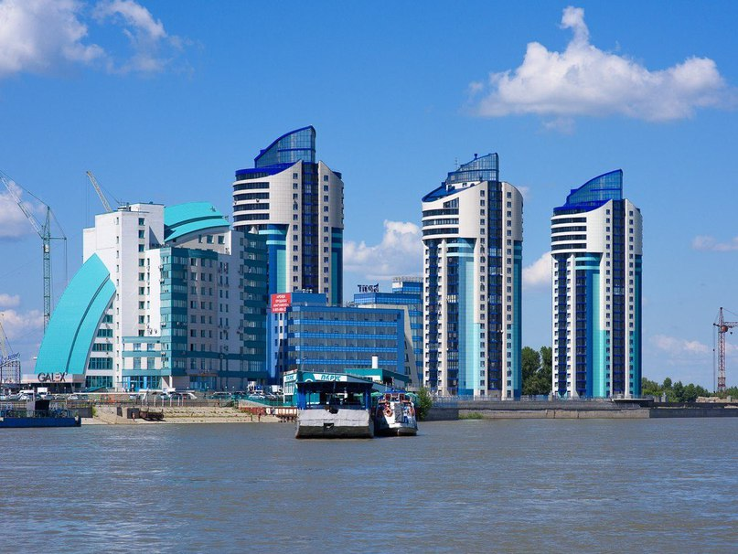
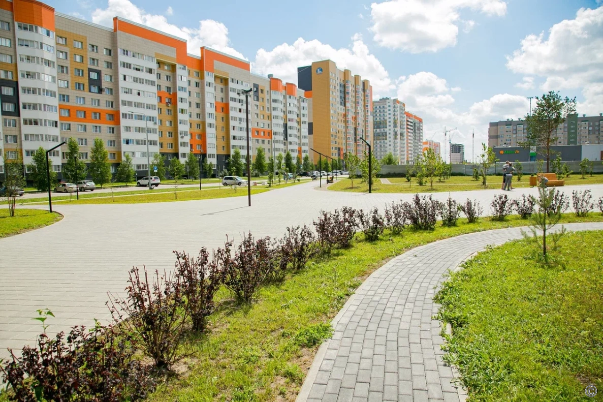

Барнаул был основан в 1730-х годах как центр сереброплавильного производства. Инициатором создания города стал промышленник Акинфий Демидов, который выбрал это место благодаря богатым залежам руды и удобному расположению на реке Обь. Уже в XVIII веке Барнаул стал одним из крупнейших центров металлургии в Сибири.


В XIX веке город продолжил развиваться как промышленный и торговый центр. Здесь строились новые заводы, развивалась инфраструктура, открывались учебные заведения и библиотеки. Барнаул становился культурным и образовательным центром Алтая.
В XX веке Барнаул пережил значительные изменения: в годы Великой Отечественной войны сюда были эвакуированы промышленные предприятия из европейской части страны, что дало толчок развитию машиностроения и других отраслей. После войны город активно застраивался, появлялись новые жилые районы, школы и культурные учреждения.

Сегодня Барнаул — это крупный административный, промышленный и культурный центр Алтайского края. Город славится своими университетами, театрами, музеями и памятниками архитектуры. Барнаул продолжает расти и развиваться, сохраняя богатое историческое наследие и открывая новые возможности для своих жителей и гостей.
Барнаул считается одним из самых зелёных городов Сибири — здесь много парков, скверов и аллей, что делает его привлекательным для жизни и отдыха.
